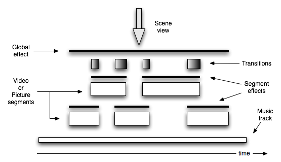
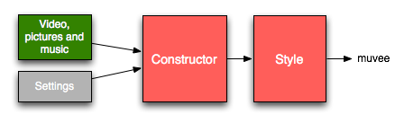

4 Anatomy of a muvee
A muvee puts together user content in a specific way that is described in the diagram below.

4.1 Automatic editing

The muvee editing engine - which we call The Constructor - automatically decides the timing of each segment and which piece of the user’s media goes into each of them. The constructor takes into account the specifications provided by the muvee Reveal user such as muvee duration and magic moments when generating the segment structure.
A style customizes the result of constructor’s output by providing its own treatments for the segments, transitions and the muvee as a whole.
As with all things, a bit more is involved. Before the construction process begins, all the video, pictures and music are analyzed for features. Video is analyzed for faces, quality, brightness and movement. Pictures are analyzed for face regions and aspect ratios. Music is analyzed for beats. These analyses are also factored in by the constructor. For example, the timing of the segments is tied to the beats in the music to give the muvee a music video-ish feel, portions of the video with faces can be given a higher chance of inclusion into the muvee, etc.
Although the diagram above simplifies the notion of a style, a style does have some say over how the analyses are used by the constructor. Styles therefore serve as a panel of switches and sliders you can tweak to influence the contructor.